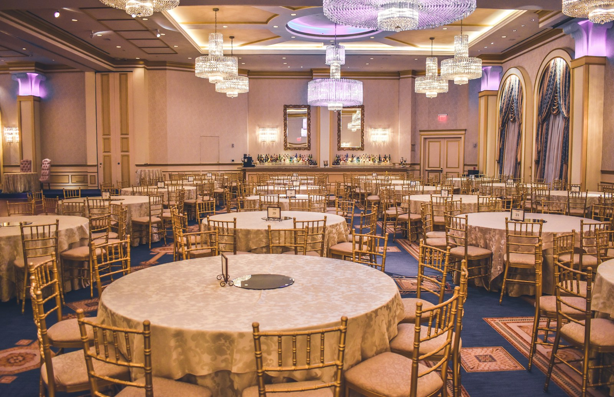
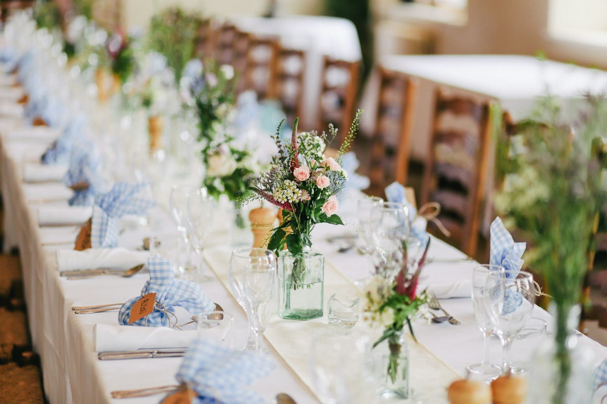
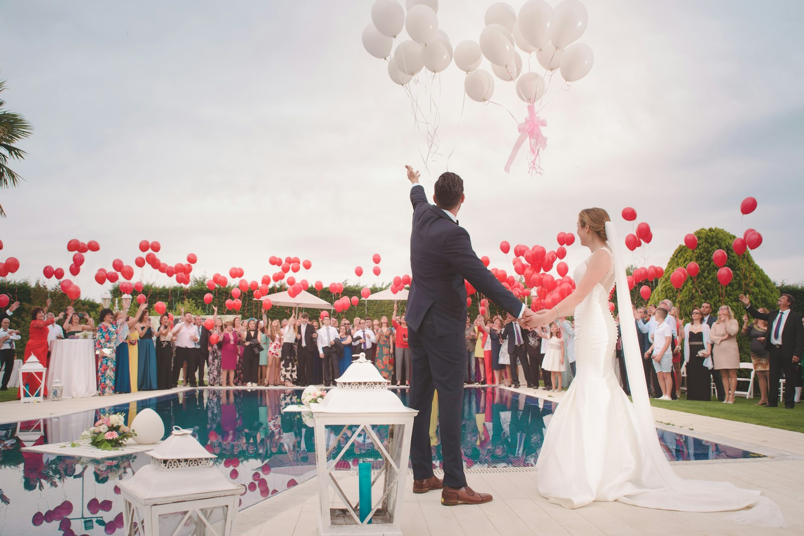

Para a criançada
Espaço para brincar, correr e criar lembranças.
Festas infantis cheias de magia, aniversários e celebrações em um espaço preparado para receber toda a família.
Agendar uma visita Conhecer o espaçoUm espaço cheio de possibilidades para você criar uma festa com a sua cara. Reúna as pessoas queridas e imagine cada detalhe.
Conheça o espaço
Espaço para brincar, correr e criar lembranças.
Um ambiente acolhedor para conversar e celebrar.
Uma estrutura que se adapta às ideias de cada festa.
Ideias ilustrativas para uma comemoração cheia de personalidade.


Um lugar imaginado para reunir pessoas e transformar encontros em memórias felizes.
Uma ideia divertida para noites especiais entre amigos.
“Um dia cheio de alegria para toda a família.”
Depoimento ilustrativo
“Cada detalhe deixou o momento especial.”
Depoimento ilustrativo
Experimente o formulário demonstrativo. Nenhuma informação será enviada.
Este é um modelo de site; o endereço é ilustrativo.
As características devem ser confirmadas no projeto final.
O modelo apresenta festas infantis, aniversários e outros encontros.
A capacidade depende do espaço real escolhido.